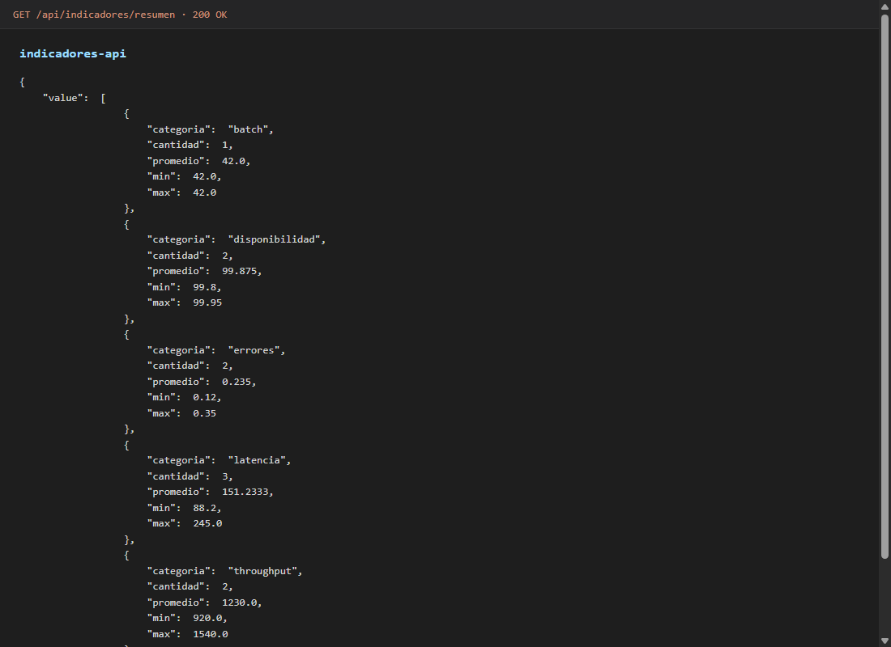

Demos técnicas
Capturas para tech lead / code review rápido. Si solo te interesa el perfil, vuelve a Perfil o Contacto.
ETL y API


eventos-api (idempotencia)


indicadores-api (.NET 8)
indicadores-api
— Swagger y GET /api/indicadores/resumen

